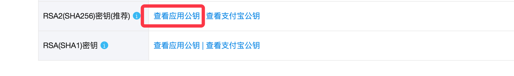
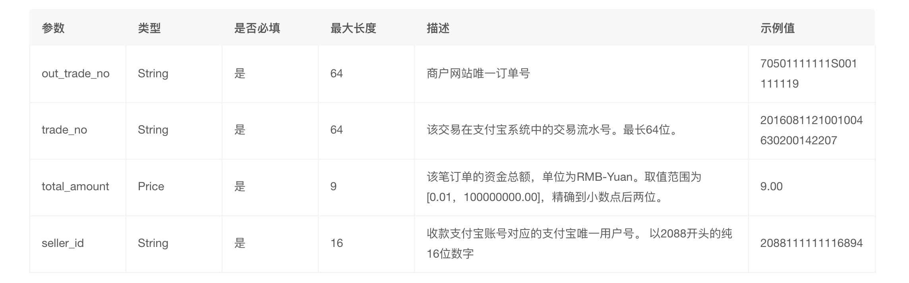

之前一直想记录一下在项目中使用到的事务以及支付宝支付功能，自己一直犯懒没有完，趁今天有点兴致，在这记录一下。
商城项目必备的就是支付订单的功能，所以就会涉及到订单的保存以及支付接口的引入。先来看看订单的保存，在数据库模型涉及之初，将订单分成了两个表，一个为订单表，记录订单的基本信息，如订单号，用户信息，运费之类，一个为订单商品表，记录该订单中的商品信息。在保存订单时，肯定会涉及到两个表的新建和保存，其实还有一张表也需要进行一些修改，那就是商品表，当一个订单保存成功，意味着本次交易成功，商品售出，商品的库存应该进行修改。所以，在保存订单这一操作中，涉及到的表有三张。所以在保存订单时，多表数据的修改，要嘛同时成功，要嘛同时失败，这就跟数据库中的事务很像，因此，在这里引入事务，来完成订单保存的功能。
在Django中可以通过django.db.transaction模块提供的atomic来定义一个事务，atomic提供两种用法，一种是装饰器，一种是with语句。
from django.db import transaction
@transaction.atomic
def viewfunc(request):
# 这些代码会在一个事务中执行
...from django.db import transaction
def viewfunc(request):
# 这部分代码不在事务中，会被Django自动提交
...
with transaction.atomic():
# 这部分代码会在事务中执行
... 在Django中，还提供了保存点的支持，可以在事务中创建保存点来记录数据的特定状态，数据库出现错误时，可以恢复到数据保存点的状态
from django.db import transaction
# 创建保存点
save_id = transaction.savepoint()
# 回滚到保存点
transaction.savepoint_rollback(save_id)
# 提交从保存点到当前状态的所有数据库事务操作
transaction.savepoint_commit(save_id)所以，可以在序列化器的create方法中，创建一个事务，还进行数据的修改保存还有新建，若有地方出错，则直接回滚，若没有问题则提交事务。代码如下
def create(self, validated_data):
"""
保存订单
"""
# 获取当前下单用户
user = self.context['request'].user
# 组织订单编号 20170903153611+user.id
# timezone.now() -> datetime
order_id = timezone.now().strftime('%Y%m%d%H%M%S') + ('%09d' % user.id)
address = validated_data['address']
pay_method = validated_data['pay_method']
# 生成订单
with transaction.atomic():
# 创建一个保存点
save_id = transaction.savepoint()
try:
# 创建订单信息
order = OrderInfo.objects.create(
order_id=order_id,
user=user,
address=address,
total_count=0,
total_amount=Decimal(0),
freight=Decimal(10),
pay_method=pay_method,
status=OrderInfo.ORDER_STATUS_ENUM['UNSEND'] if pay_method == OrderInfo.PAY_METHODS_ENUM['CASH'] else OrderInfo.ORDER_STATUS_ENUM['UNPAID']
)
# 获取购物车信息
redis_conn = get_redis_connection("cart")
redis_cart = redis_conn.hgetall("cart_%s" % user.id)
cart_selected = redis_conn.smembers('cart_selected_%s' % user.id)
# 将bytes类型转换为int类型
cart = {}
for sku_id in cart_selected:
cart[int(sku_id)] = int(redis_cart[sku_id])
# # 一次查询出所有商品数据
# skus = SKU.objects.filter(id__in=cart.keys())
# 处理订单商品
sku_id_list = cart.keys()
for sku_id in sku_id_list:
while True:
sku = SKU.objects.get(id=sku_id)
sku_count = cart[sku.id]
# 判断库存
origin_stock = sku.stock # 原始库存
origin_sales = sku.sales # 原始销量
if sku_count > origin_stock:
transaction.savepoint_rollback(save_id)
raise serializers.ValidationError('商品库存不足')
# 用于演示并发下单
# import time
# time.sleep(5)
# 减少库存
# sku.stock -= sku_count
# sku.sales += sku_count
# sku.save()
new_stock = origin_stock - sku_count
new_sales = origin_sales + sku_count
# 根据原始库存条件更新，返回更新的条目数，乐观锁
ret = SKU.objects.filter(id=sku.id, stock=origin_stock).update(stock=new_stock, sales=new_sales)
if ret == 0:
continue
# 累计商品的SPU 销量信息
sku.goods.sales += sku_count
sku.goods.save()
# 累计订单基本信息的数据
order.total_count += sku_count # 累计总金额
order.total_amount += (sku.price * sku_count) # 累计总额
# 保存订单商品
OrderGoods.objects.create(
order=order,
sku=sku,
count=sku_count,
price=sku.price,
)
# 更新成功
break
# 更新订单的金额数量信息
order.total_amount += order.freight
order.save()
except serializers.ValidationError:
raise
except Exception as e:
logger.error(e)
transaction.savepoint_rollback(save_id)
raise
# 提交事务
transaction.savepoint_commit(save_id)
# 更新redis中保存的购物车数据
pl = redis_conn.pipeline()
pl.hdel('cart_%s' % user.id, *cart_selected)
pl.srem('cart_selected_%s' % user.id, *cart_selected)
pl.execute()
return order还有一点需要注意的是，当订单提交，购物车中相应的商品应该进行删除。好了，以上就是django中的事务。
再来说说支付宝支付功能的引入，现在基本上所有的项目涉及到支付功能时都会引入第三方支付，其中使用最广泛的应该就是支付宝和微信了，这里我使用的是支付宝支付。当订单创建完成，接下来就是支付了。
支付宝开发平台网址https://open.alipay.com/platform/home.htm。由于开发者账户需要经过审核，支付宝有提供沙箱环境，来进行测试。沙箱应用：https://docs.open.alipay.com/200/105311。沙箱账号：https://openhome.alipay.com/platform/appDaily.htm?tab=account。python对接支付宝SDK：https://github.com/fzlee/alipay/blob/master/README.zh-hans.md。SDK：https://docs.open.alipay.com/270/106291/。
先来缕一下流程，用户点击按钮请求支付宝支付界面，先进行登录，登录成功后进行支付操作，支付成功会进行回调。
首先第一步，用户点击按钮，后端会进行url的拼接，将拼接好的url返给前端，前端进行跳转，跳转到支付宝相关界面，用户进行登录和支付等操作。
查看pythonsdk，首先我们可以通过openssl命令生成一个密钥(公钥和私钥），私钥自己留存，公钥用户校验。命令如下：
openssl
OpenSSL> genrsa -out app_private_key.pem 2048 # 私钥
OpenSSL> rsa -in app_private_key.pem -pubout -out app_public_key.pem # 导出公钥
OpenSSL> exit
同时，你要从支付宝获得一个公钥字符串，格式可参考：https://github.com/fzlee/alipay/blob/master/tests/certs/ali/ali_public_key.pem
由于上面我们用的是RSA生成的密钥，所以在支付宝中我们也需要RSA的公钥

设置好了密钥，我们就可以开始写视图，代码如下：
class PaymentView(APIView):
"""
支付
"""
permission_classes = (IsAuthenticated,)
def get(self, request, order_id):
"""
获取支付链接
"""
# 判断订单信息是否正确
try:
order = OrderInfo.objects.get(order_id=order_id, user=request.user,
pay_method=OrderInfo.PAY_METHODS_ENUM["ALIPAY"],
status=OrderInfo.ORDER_STATUS_ENUM["UNPAID"])
except OrderInfo.DoesNotExist:
return Response({'message': '订单信息有误'}, status=status.HTTP_400_BAD_REQUEST)
# 构造支付宝支付链接地址
alipay = AliPay(
appid=settings.ALIPAY_APPID,
app_notify_url=None, # 默认回调url
app_private_key_path=os.path.join(os.path.dirname(os.path.abspath(__file__)), "keys/app_private_key.pem"),
alipay_public_key_path=os.path.join(os.path.dirname(os.path.abspath(__file__)), "keys/alipay_public_key.pem"), # 支付宝的公钥，验证支付宝回传消息使用，不是你自己的公钥,
sign_type="RSA2", # RSA 或者 RSA2
debug=settings.ALIPAY_DEBUG # 默认False
)
order_string = alipay.api_alipay_trade_page_pay(
out_trade_no=order_id,
total_amount=str(order.total_amount),
subject="美多商城%s" % order_id,
return_url="http://www.meiduo.site:8080/pay_success.html",
)
# 需要跳转到https://openapi.alipay.com/gateway.do? + order_string
# 拼接链接返回前端
alipay_url = settings.ALIPAY_URL + "?" + order_string
return Response({'alipay_url': alipay_url})
相关的参数可以提前在配置文件中配置好（ALPAY_APPID，ALPAY_URL，ALPAY_DEBUG）注意ALPAY为True时才启用沙箱环境。当用户支付成功，会对你填写的回调网址进行回调，返回的参数如下图。

前端页面将此数据发送给后端，后端检验并保存支付结果。以上就是全部过程。具体的过程可以参考pythonsdk。
本人QQ：595395786，欢迎交流！！